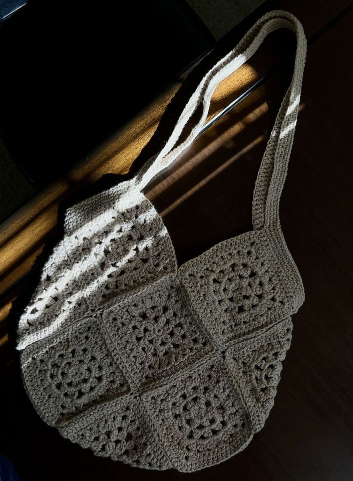
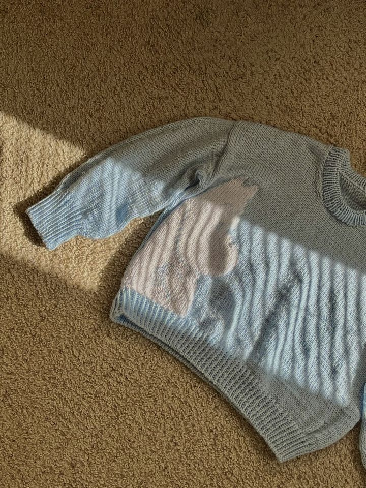
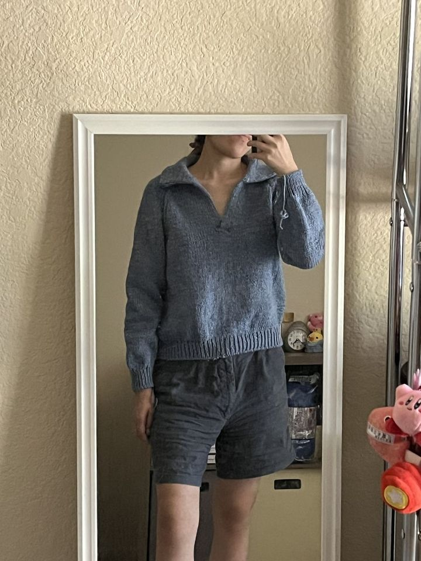
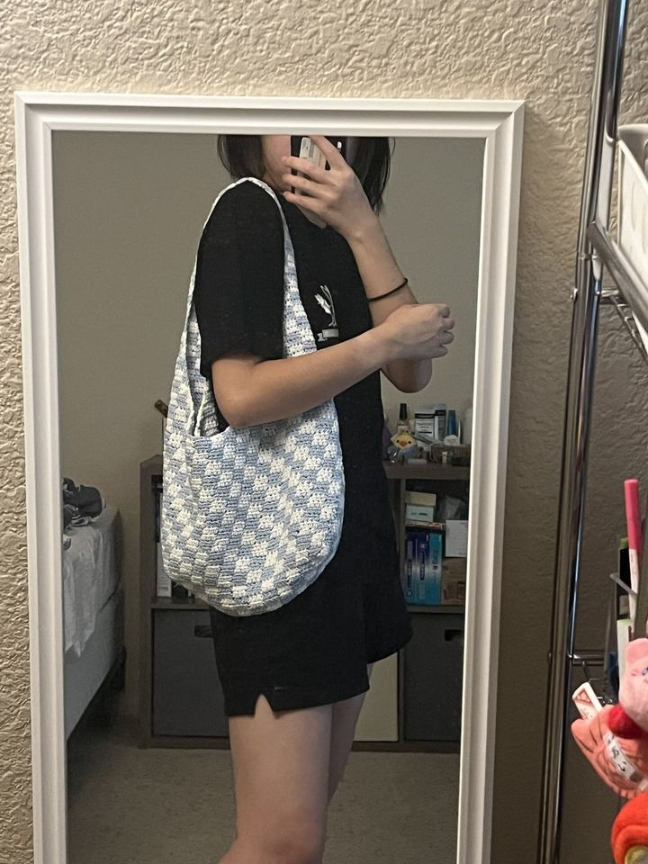

Beyond research
The fun stuff
I make my own sweaters! Here's what's been on my needles and on my bookshelf.
Knits & Crochets
An avid knitter (and part-time crocheter) since college, mostly making sweaters and accessories.
-

CrochetCrochet Handbag
Cotton · Granny squares
-

KnitMoomin Sweater
Size S
-

KnitElizabeth Blouse
Chunky wool · Size S
-

CrochetCrochet Crossbag
Cotton blend · Two colors
Books
I read mostly Chinese non-fiction. I keep track of everything I read, along with reviews, on Goodreads.